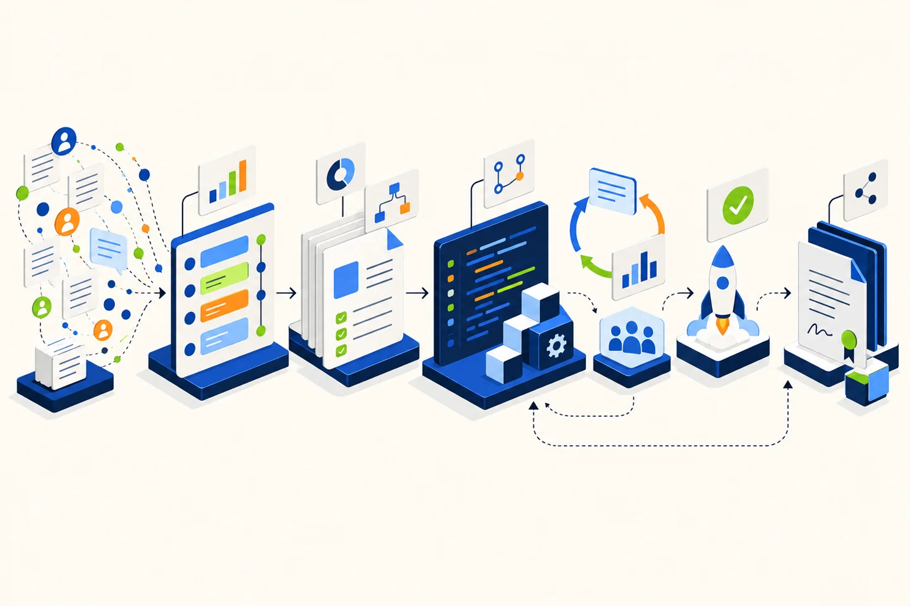
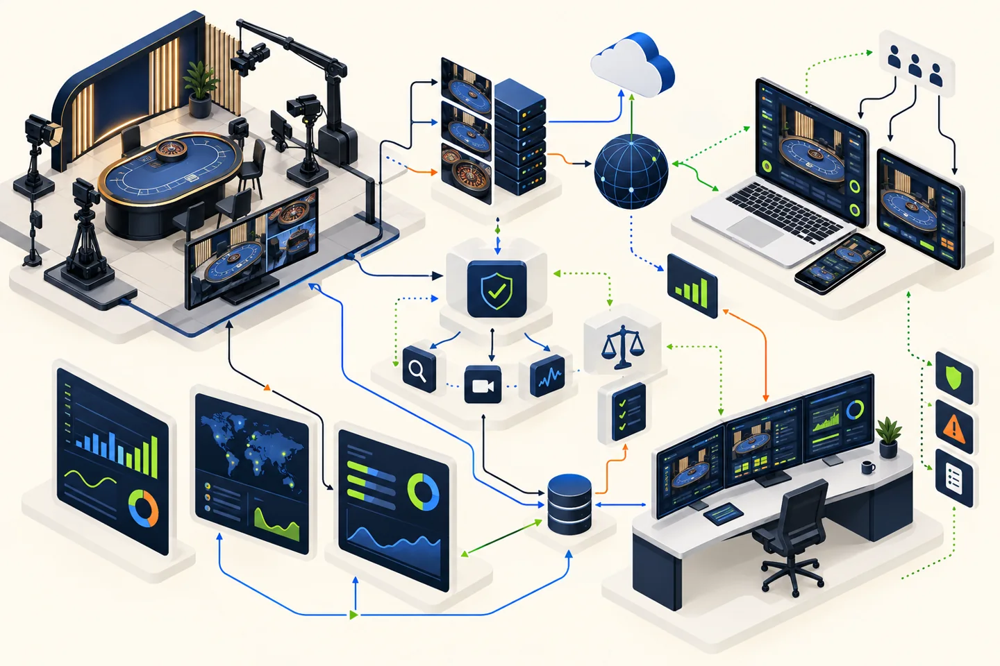

Tbilisi · Open to product roles
PRODUCT MANAGER · LIVE CASINO / B2B SAAS
I turn product signals into focused decisions.
Product-minded operator with 7+ years inside live casino operations and hands-on 0→1 product execution as Co-Founder & COO of LegalStepy.
PRODUCT SYSTEM / 01From signal to outcome
ACTIVE
PRIORITY VIEWIMPACT / CONFIDENCE / EFFORT
01Core workflow
HIGH
02Visibility layer
HIGH
03Enhancement
LATER
OUTPUTOne shared direction
NEXTShip → learn → refine
7+years in live casino operations
300+customer discovery conversations
50product demos delivered
10pilot engagements coordinated
100+participants in a program led
01 / PRODUCT FIT
Domain depth meets product discipline.
I bring two perspectives that rarely sit in one profile: firsthand knowledge of live operations and the practical work of shaping a product from zero.
01
LIVE PRODUCT CONTEXT
I understand what happens after a product goes live.
Seven years in a high-volume live casino environment built my instinct for operational reliability, frontline behavior, performance signals, quality, escalation and change adoption.
Live operationsKPI signalsQualityScale
02
0 → 1 PRODUCT BUILDING
I know how to turn an unclear pain into a focused product.
At LegalStepy, I moved across discovery, problem framing, MVP scope, roadmap, user stories, acceptance criteria, demos, pilot feedback and cross-functional delivery.
DiscoveryRoadmapRequirementsValidation
MY LIVE CASINO PRODUCT LENS
A live casino product is one connected system.
Player experience, studio execution, operator goals, technology dependencies and controls cannot be managed in isolation. Product decisions become stronger when each impact is visible.
Player experienceClarity · consistency · trust
Studio operationsQuality · flow · incidents
Operator outcomesPerformance · visibility · scale
Delivery systemAPIs · dependencies · acceptance
Control layerCompliance · risk · auditability
02 / SELECTED PRODUCT WORK
Evidence, not product theatre.
These cases show how I gather signals, make trade-offs, coordinate delivery and turn feedback into the next product decision.

CASE 01B2B SaaS · 0 → 1
2025 — PRESENTLegalStepy
CO-FOUNDER & COO
Shaping a contract lifecycle product from customer pain to pilots.
Companies were managing contracts across email, documents and manual follow-ups. The challenge was not to add more features — it was to identify the workflow problems strong enough to build around.
Mapped recurring jobs, breakdowns and buying context across stakeholders.
Turned broad demand into a prioritized workflow, value proposition and sequence.
Translated needs into user stories, acceptance criteria and clear decisions.
Coordinated demos, feedback loops and pilot learning with potential users.
2019 — PRESENTEvolution
LIVE OPERATIONS · PEOPLE SYSTEMS
Building product judgment from the sharp end of live operations.
Working inside a large live casino operation has shown me how product and process choices affect real teams, quality, performance and customer experience at scale.
Read operational signals
Use KPIs, quality observations and recurring friction to identify where action matters.
Coordinate adoption
Turn a change into clear ownership, communication, follow-through and usable routines.
Close the feedback loop
Bring frontline context into decisions and check whether the change worked in practice.
Lead at scale
Coordinate parallel initiatives and a structured program supporting 100+ mentors.

CASE 02Live product context
03 / PRODUCT OPERATING SYSTEM
How I move from ambiguity to learning.
A practical loop for keeping the team close to the problem, the priority visible and the next decision grounded in evidence.
Find the real problem
Users, data, workflow context and constraints.
Problem briefDefine the outcome
Target behavior, value and measurable success.
Outcome + metricChoose the best bet
Impact, evidence, confidence, effort and risk.
Focused roadmapMake scope executable
Stories, criteria, dependencies and owners.
Shared delivery planMeasure and refine
Usage, feedback, outcomes and next decision.
Product learning
PRODUCT PRINCIPLE
A roadmap is not a list of requests. It is a sequence of decisions about which problem is worth solving next — and why.
04 / BACKGROUND
Operations, business and legal thinking in one profile.
My background helps me balance user value, operational reality, commercial priorities and risk — then communicate the trade-off clearly.
EXPERIENCE7+ YEARS
Co-Founder & COO
LegalStepy
B2B SaaS · Product discovery · DeliveryTeam & Project Leadership
Evolution
Live operations · Performance · People systemsEDUCATIONBUSINESS + LAW
MBA
Business Administration & Modern Technologies
Business and Technology UniversityLL.M
Comparative Private & International Law
New Vision UniversityLL.B
Law
Tbilisi State University
PRODUCT TOOLKIT
DiscoveryPrioritizationRoadmapsUser storiesAcceptance criteriaKPI analysisAgile / ScrumJiraConfluenceFigma
05 / NEXT CONVERSATION
Let’s build a product people trust in practice.
I’m open to Product Manager opportunities where domain understanding, customer insight and disciplined execution matter.